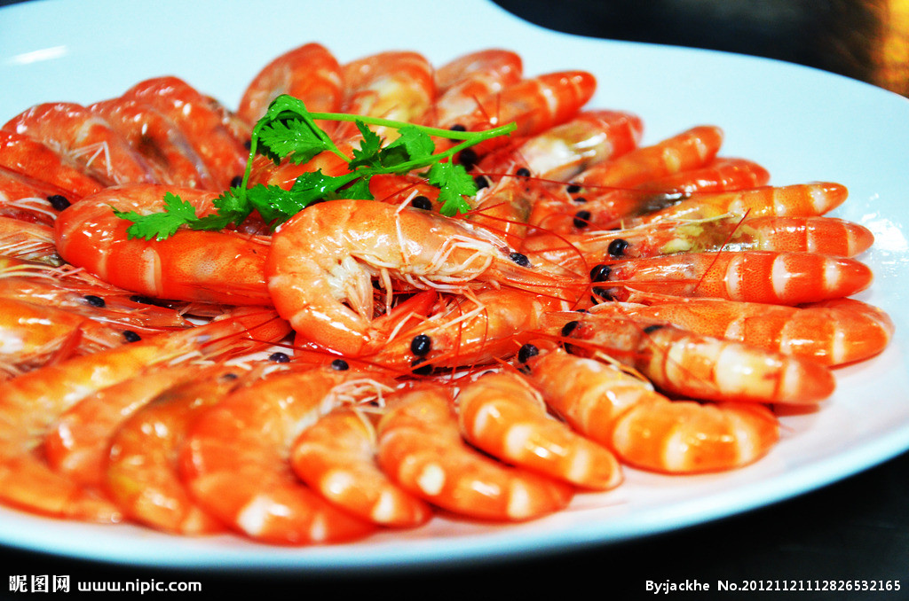

| 全选 | ID | 标题 | 内容 | 图片 | 操作 |
| 1 | 苹果 | 苹果是蔷薇科(Rosaceae)苹果属(malus)植物的果实，该属约25种 |  | 删除 | |
| 2 | 苹果 | 苹果是蔷薇科(Rosaceae)苹果属(malus)植物的果实，该属约25种 | 删除 | ||
| 3 | 苹果 | 苹果是蔷薇科(Rosaceae)苹果属(malus)植物的果实，该属约25种 | 删除 | ||
| 4 | 苹果 | 苹果是蔷薇科(Rosaceae)苹果属(malus)植物的果实，该属约25种 | 删除 | ||
| 5 | 苹果 | 苹果是蔷薇科(Rosaceae)苹果属(malus)植物的果实，该属约25种 | 删除 | ||
| 6 | 苹果 | 苹果是蔷薇科(Rosaceae)苹果属(malus)植物的果实，该属约25种 | 删除 | ||
| 7 | 苹果 | 苹果是蔷薇科(Rosaceae)苹果属(malus)植物的果实，该属约25种 | 删除 | ||
| 8 | 苹果 | 苹果是蔷薇科(Rosaceae)苹果属(malus)植物的果实，该属约25种 | 删除 | ||
| 9 | 苹果 | 苹果是蔷薇科(Rosaceae)苹果属(malus)植物的果实，该属约25种 | 删除 | ||
| 10 | 苹果 | 苹果是蔷薇科(Rosaceae)苹果属(malus)植物的果实，该属约25种 | 删除 |